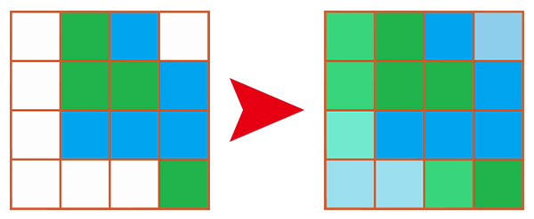

在栅格影像处理中，栅格图像补偿是指栅格数据的空间插值，利用已知数据对未知数据的空间位置进行插值。
本文主要介绍一个利用Python进行栅格图像补偿的小程序，采用邻域均值计算方法对中心空值栅格进行数据补偿。

思路
获取栅格数据：利用GDAL Python读取栅格影像，获取栅格影像行列、空间参照、空值等参数，将栅格数据读取为二维矩阵，方便后续处理
根据栅格数据大小设置领域大小，逐行列遍历栅格，如果当前栅格为空值，则计算邻域均值，作为当前栅格值
处理栅格数据边界，如果边界为空值，可简单利用周边值填充。
注意事项：本程序适用于空间渐变类型的数据（如土壤水分），不适用于类型数据（如植被类型）
算法实现
栅格数据读取程序，依赖库：GDAL in Python
1 2 3 4 5 6 7 8 9 10 11 12 13 14 15 16 17 18 19 20 21 22 23 24 25 26 27 28 29 30 31 32 33 34 35 36 37 38 39 40 41 42 43 | from osgeo import gdal,osrclass Raster: def __init__(self, nRows, nCols, data, noDataValue=None, geotransform=None, srs=None): self.nRows = nRows self.nCols = nCols self.data = data self.noDataValue = noDataValue self.geotrans = geotransform self.srs = srs self.dx = geotransform[1] self.xMin = geotransform[0] self.xMax = geotransform[0] + nCols * geotransform[1] self.yMax = geotransform[3] self.yMin = geotransform[3] + nRows * geotransform[5] def ReadRaster(rasterFile): ds = gdal.Open(rasterFile) band = ds.GetRasterBand(1) data = band.ReadAsArray() xsize = band.XSize ysize = band.YSize noDataValue = band.GetNoDataValue() geotrans = ds.GetGeoTransform() srs = osr.SpatialReference() srs.ImportFromWkt(ds.GetProjection()) # print srs.ExportToProj4() if noDataValue is None: noDataValue = -9999 return Raster(ysize, xsize, data, noDataValue, geotrans, srs) def WriteGTiffFile(filename, nRows, nCols, data, geotransform, srs, noDataValue, gdalType): format = "GTiff" driver = gdal.GetDriverByName(format) ds = driver.Create(filename, nCols, nRows, 1, gdalType) ds.SetGeoTransform(geotransform) ds.SetProjection(srs.ExportToWkt()) ds.GetRasterBand(1).SetNoDataValue(noDataValue) ds.GetRasterBand(1).WriteArray(data) ds = None |
栅格图像补偿主程序（以24邻域计算为例）：
1 2 3 4 5 6 7 8 9 10 11 12 13 14 15 16 17 18 19 20 21 22 23 24 25 26 27 28 29 30 31 32 33 34 35 36 37 38 39 40 41 42 43 44 45 46 47 48 49 50 51 52 53 54 55 56 57 58 59 60 61 62 63 64 65 66 | def Comps(in_raster, out_raster): Raster = ReadRaster(in_raster) data_ori = Raster.data nRows = Raster.nRows nCols = Raster.nCols geoTrans = Raster.geotrans srs = Raster.srs NDV = Raster.noDataValue nb = [2, 2, 2, 2] # [up, down, left, right] n = (nb[0] + nb[1] + 1) * (nb[2] + nb[3] + 1) # data_new = numpy.zeros((nRows, nCols)) for i in range(nb[0], nRows - nb[1]): for j in range(nb[2], nCols - nb[3]): if data_ori[i][j] == NDV: nodataNum = 0. neighboSum = 0. for p in range(i - nb[0], i + 1 + nb[1]): for q in range(j - nb[2], j + 1 + nb[3]): if data_ori[p][q] == NDV: nodataNum += 1. else: neighboSum += float(data_ori[p][q]) if nodataNum == n: data_ori[i][j] = NDV else: data_ori[i][j] = neighboSum / float(n - nodataNum) # print('%d / %d = %.3f' % (neighboSum, (9. - nodataNum), data_ori[i][j])) else: continue ## The first row for i in range(nb[0]): for j in range(nCols): if (data_ori[i][j] == NDV): data_ori[i][j] = data_ori[i + nb[0]][j] else: continue ## The last row for i in range(nRows - nb[1], nRows): for j in range(nCols): if (data_ori[i][j] == NDV): data_ori[i][j] = data_ori[i - nb[1]][j] else: continue ## The first col for i in range(nRows): for j in range(nb[2]): if (data_ori[i][j] == NDV): data_ori[i][j] = data_ori[i][j + nb[2]] else: continue ## The last col for i in range(nRows): for j in range(nCols - nb[3], nCols): if (data_ori[i][j] == NDV): data_ori[i][j] = data_ori[i][j - nb[3]] else: continue WriteGTiffFile(out_raster, nRows, nCols, data_ori, geoTrans, srs, Raster.noDataValue, gdal.GDT_Float32) print("\tCompensate finished! \n\t Save as '%s'" % out_raster) |
调用方法：
1 2 3 4 | if __name__ == "__main__": in_raster = r"<full path of input raster (*.tif)>" out_raster = r"<full path of oitput raster (*.tif)>" Comps(in_raster, out_raster) |
注释
* 主函数第10行的变量nb是计算补偿时采集的数值窗口，[2, 2, 2, 2]表示上下左右各2行，即5 × 5的窗口。
Fighting, GISer!
最新博文